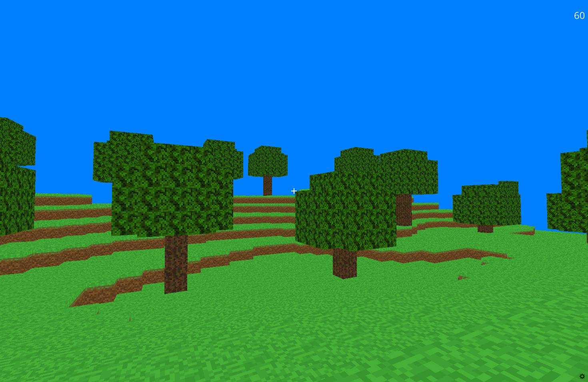
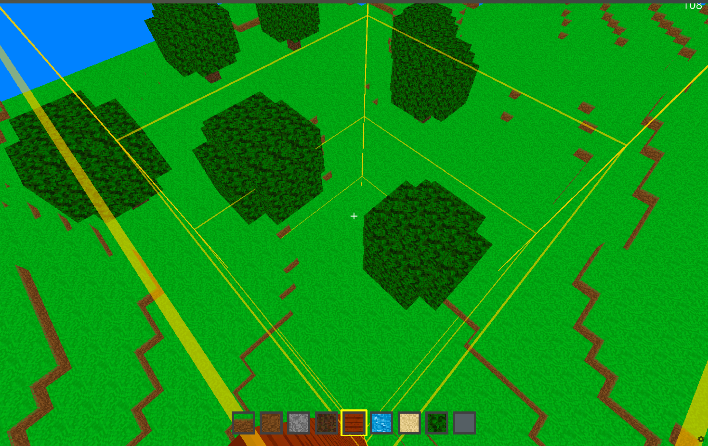

01 / 概要
PythonMinecraftの目的と実装範囲
PythonMinecraftは、PythonとUrsinaで開発したLANマルチプレイ対応の3Dブロックゲームである。文化祭で複数人が同じワールドに入り、ブロックを設置・破壊しながら共同で建築できることを目標に制作した。
ゲームとして動作させるだけでなく、100×100ブロックの地形生成、描画負荷の削減、プレイヤーの当たり判定、ワールドの差分保存、TCPによる同期、専用サーバー管理画面まで実装している。描画用データとゲーム上の論理データを分離し、それぞれを用途に合わせて処理することが設計の中心である。
- ワールド
- 100×100ブロック
- 接続人数
- 最大8人
- 地形
- 64bitシードから再現
- 保存
- 変更箇所のみを記録

03 / DDAの原理
DDAレイキャストで通過セルだけを調べる
ブロックの選択には、三次元グリッド向けのDDAレイキャストを使用する。DDAは、レイが次に横切るX・Y・Zいずれかのボクセル境界を計算し、最も近い境界の方向へ1セルずつ進む方法である。
全ブロックとの交差を総当たりするのではなく、視線が実際に通過したセルの座標だけをワールド辞書で検索する。したがって、探索コストはワールド全体のブロック数ではなく、レイの最大到達距離におおむね比例する。
01開始点をボクセル座標へ変換カメラ位置から現在のセルを決定する
→
02各軸の次の境界を計算tMaxX・tMaxY・tMaxZを比較する
→
03最短の軸へ1セル進む対応するtMaxへtDeltaを加算する
→
04辞書を検索ブロックがあれば探索を終了する
04 / DDAの計算
tMaxとtDeltaが示すもの
tMaxX、tMaxY、tMaxZは、開始点から各軸の次のセル境界まで進むために必要なレイ上の距離を表す。三つの値のうち最小の軸が、次に横切る境界である。
tDeltaX、tDeltaY、tDeltaZは、同じ軸方向で一つ先の境界へ進むたびに増加する距離である。例えばX境界が最短ならX座標をstepXだけ進め、tMaxXにtDeltaXを加える。この処理を命中または最大距離まで繰り返す。
レイが負方向へ進む場合はstepがマイナスになり、ゼロ成分の軸は境界を通過しないものとして無限大を使う。これにより、視線方向にかかわらず同じ処理で探索できる。
axis = min(tMaxX, tMaxY, tMaxZ)
cell[axis] += step[axis]
tMax[axis] += tDelta[axis]
if world.has_block(cell):
return hit_block, entered_face
05 / 衝突判定
描画Entityに依存しないボクセル衝突判定
プレイヤーの移動予定位置からAABBを計算し、その範囲と重なる整数座標を列挙して論理ブロック辞書を検索する。各ブロックへColliderを生成する必要がないため、ブロックが結合メッシュとして描画されていても衝突を判定できる。
AABBはプレイヤーの中心位置、半径、高さから求める。AABBの最小値と最大値を整数セル範囲へ変換し、その小さな範囲だけを検索するため、判定量はワールド全体の大きさに依存しない。
01移動予定位置を計算入力と速度から次の座標を求める
→
02AABBを作成半径と高さから占有範囲を求める
→
03重なる整数座標を列挙周辺セルだけを対象にする
→
04論理辞書を検索存在するブロックとの重なりを判定する
06 / 軸別解決
X・Y・Zを分けて衝突を解決する
三軸の移動を一度に適用すると、一つの壁に接触しただけで移動全体を取り消すことになりやすい。そこでX、Y、Zの順に移動と衝突判定を分け、衝突した軸の移動量だけを補正している。
X軸で左右の壁を処理し、Y軸で床への接地と天井への衝突を処理し、最後にZ軸で前後の壁を処理する。この方法では壁へ斜めに進んだ場合も、壁に平行な成分は維持されるため、壁に沿って滑らかに移動できる。
ブロック設置時にもプレイヤーAABBとの重なりを調べる。同じ空間へブロックを置けないようにすることで、設置直後にプレイヤーがブロックへ埋まる状態を防いでいる。
01X方向左右の壁との重なりを解決
→
02Y方向床への接地と天井を解決
→
03Z方向前後の壁との重なりを解決
07 / チャンク
不透明ブロックをチャンクメッシュへ統合
初期実装では、各ブロックを個別のEntityとして生成していた。ブロック数が増えると、描画、更新、可視性管理の対象も同じ割合で増え、高所から広い範囲を見たときに負荷が急増した。
現在はX・Z方向の10×10ブロックを一つのチャンクとして扱う。各ブロックの六面を確認し、隣接する不透明ブロックに隠れている面を除外する。残った面の頂点、UV、三角形インデックスをまとめ、一つのMesh Entityとして描画する。
論理ブロック辞書は維持されるため、ブロック数自体を減らしたわけではない。描画エンジンへ渡すEntity数と不要な面数を減らしたことが高速化の要因である。

09 / 地形生成
64bitシードから地形と木を再現する
ワールド生成では、64bitのシード値とX・Z座標から決定論的なノイズ値を計算する。広い起伏用と細かな変化用のノイズを組み合わせ、各列の地表高度を決める。最上面へ草、その下の三層へ土、さらに深い部分へ石を配置する。
木の候補位置、高さ、形状も同じシードから決定する。スポーン地点の周囲、ワールド端、急な斜面を候補から除外し、木同士の最低距離を設けることで、共同建築のための空間を確保している。
生成処理はクライアントとサーバーで共通化している。同じバージョンのジェネレーターとシードを使えば、地形データそのものを送らなくても同じワールドを再現できる。
0164bitシードワールドを識別する整数
→
02座標ごとのノイズ広い起伏と細かな変化を合成
→
03地表高度列ごとの最上面を決定
→
04ブロックと木草・土・石・原木・葉を配置
10 / 差分保存
基本地形を再生成し、変更だけを保存する
地形全体をJSONへ保存すると、ワールドを広げるほどファイル容量と読み書き量が増える。そこで生成地形はシードから再現し、プレイヤーが設置したブロックと破壊した座標だけを保存する方式へ変更した。
読込時はgeneratorとseedから基本地形を再生成し、removed_blocksに含まれる座標を削除してから、placed_blocksのブロックを追加する。生成ブロックを壊した後で同じ場所へ別のブロックを置いた場合も、差分として正しく復元できる。
テンプレートワールドでは、配布ファイルに含まれるTemplate.jsonを基準地形として扱う。通常の生成ワールドと同様に、各セーブには基準地形を複製せず、変更差分だけを記録する。
{
"generator": "grassland_v2",
"seed": 47353368572851108,
"placed_blocks": [[32, 1, 33, 0, "y"]],
"removed_blocks": [[29, 0, 29]]
}